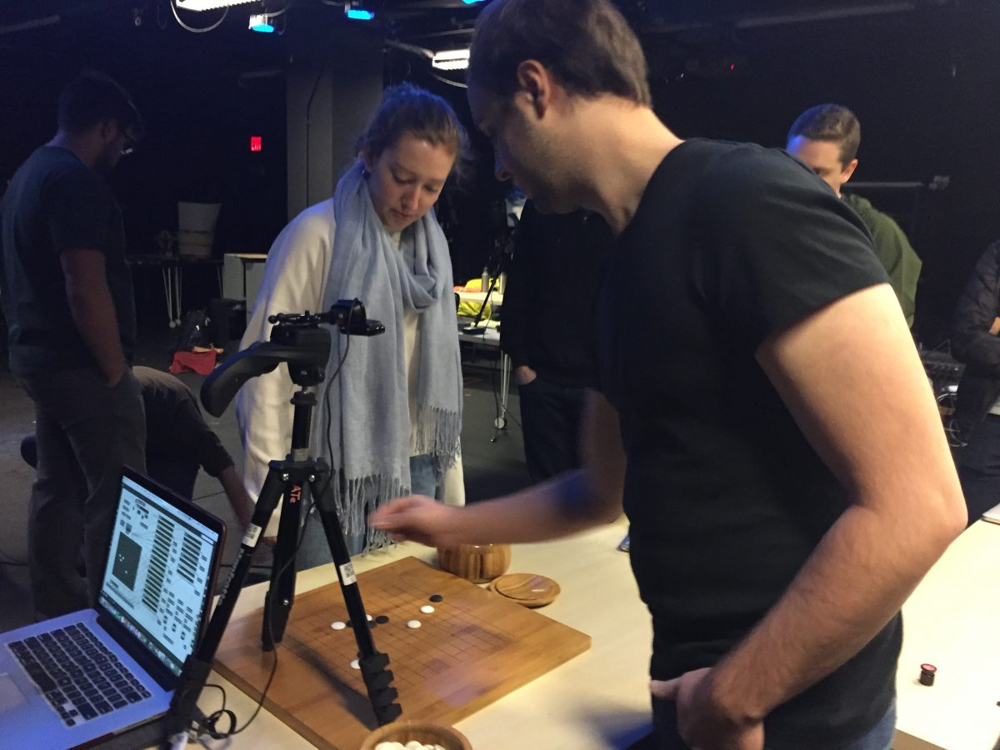
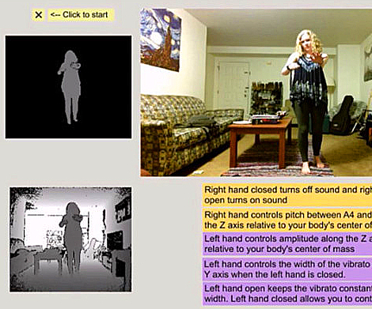

Creating with the Machine: Interactive Algorithmic Composition for Live Performance
Tech: Python, Max MSP, TensorFlow, MIDI, OSC
Awards: Henry Armero Memorial Award for BCSA; an award to honor the memory of Henry Armero.
In a live concert setting, the movement and energy of performers adds important emotional elements to a music listening experience. Computer-generated music can achieve precision and technique not possible by human musicians, yet it can feel alienating and impersonal due to a lack of human connection and emotion. "Creating with the Machine" is a set of compositions that combine algorithmic and traditional methods of music composition into live performances to explore how interactive generative algorithms can influence creativity in musical improvisation and create a compelling listening experience for the audience.
Three compositions were created and premiered, each showcasing a different algorithmic composition technique. The first composition, "Machine Cycle," utilizes Markov chains to melodically alter and playback phrases from a keyboard player in real time, creating a loop between the algorithm and performer.
The second composition, "Recurrent Neural Networks on Bach," generates polyphonic phrases during the training of a recurrent LSTM neural network and uses performer-controlled time stretching to accent the gradual transition from chaotic noise to tonal harmony.
Finally, the third composition, "Breathe," captures the breathing of a performer to manipulate the frequency spectrum of their instrument as they improvise. These performances all aim to meld the themes of creativity and computation in order to expose the audience to the use of automation and randomness for artistic purposes.
Dynamic Reverb Simulation for HoloLens
Tech:HoloLens, Unity, C#
Git: https://github.com/Satrat/Raytracing-Sound-in-3D-Space-Using-the-Microsoft-HoloLens
YouTube: https://www.youtube.com/watch?v=HtJZRteUPh0&feature=youtu.be
This HoloLens application simulates sound propogation in augmented reality in order to create realistic echo effects that take into acount the topology of the AR environment during reverb calculations. The size and shape of a room, as well as the presence of obstacles, can significantly influence sound, and taking these parameters into consideration can improve imersion in an augmented reality environment. Sound propogation is simulated using a parallelized ray tracing algorithm that approximates how sound bouces around a room by modeling the waves as rays. The result is reverberation effects that can be calculated in real time, and change dynamically each frame as the user moves around the room.
Lets Go: A Go Step Sequencer and Melody Creator
Tech:Webcam, OpenCV, Python, OSC, Max MSP, Logic Pro
YouTube: https://www.youtube.com/watch?v=4NljADQd_oc&feature=youtu.be
Let’s Go uses computer vision to track the positions of the black and white tokens in the popular board game Go. By representing a board state as a matrix, we can transform the Go board into a step sequencer and melody creator, allowing the two players to create dynamically changing music as the game progresses. Let’s Go uses computer vision to track the positions of the black and white tokens in the popular board game Go. By representing a board state as a matrix, we can transform the Go board into a step sequencer and melody creator, allowing the two players to create dynamically changing music as the game progresses. OpenCV was used to process a live stream of a Go board captured with an HD webcam. The current board state is then transformed into a position matrix using a blob detection algorithm.

RobOrchestra
Tech: Arduino, Hardware, Java, Max MSP, MIDI
Git: https://github.com/CMU-Robotics-Club/RobOrchestra
RobOrchestra is an ongoing project in the Carnegie Mellon Robotics Club that aims to explore the creative possibilities for robotic instruments. We design, build and program robots that read music from MIDI data in order to put on musical performances. Our goal is to create a full robotic orchestra that is able to play from arrangements from standard MIDI files, and is also able to "improvise" unique polyphonic music in real time based off of music generation algorithms developed by our team. Currently, our orchestra consists of XyloBot, BassBot, SnareBot and UkuleleBot, and has performed at several campus events at Carnegie Mellon including Spring Carnival and RoboClub Late Night.

Can your Smartphone Touch you Back? Rendering Haptic Textures from Friction on Android OS
Tech: MySQL, Matlab, Java, Android
Git: https://github.com/Satrat/Virtual-Textures
Publication:http://ieeexplore.ieee.org/document/7989893/
This research project, under the supervision of Dr. Roberta Klatzky, explored the possibilities of incorporating haptic feedback into smartphone and tablet applications. We worked with a device that utilizes haptic technology, the Senseg "Feelscreen" tablet, to investigate its use for virtual textures. The tablet gives the user haptic feedback by varying friction impulses depending on how the user's finger is moving. We first investigated human response to these virtual textures, and after seeing positive results designed a keyboard application that uses various texture gradients to allow the user to find their direction of movement and "swipe type" on the keyboard without having to look at the screen. Our research was presented at the Meeting of the Minds research symposium in the Spring of 2016 and published in the IEEE World Haptics Conference in 2017.
The Kinect Theremin
Tech: Kinect, C++, Max MSP
Git: https://github.com/Satrat/Kinect-Theremin
The Kinect Theremin is an application developed for the Microsoft Kinect that allows the user to create expressive music using their own body as an instrument. Based on the instrument patented by Leon Theremin in 1928, the Kinect Theremin produces a spooky, alien-like sound that is often found in science fiction and horror movies. The user can move their limbs around in order to manipulate the pitch, volume and timbre of this electronic instrument. The Kinect Theremin also responses to several different hand shapes that can be used to start and stop sound production.
Resume Parser and Classifier
Tech: Python
Git: https://github.com/Satrat/Resume-Parser
This hackathon project, developed at YHacks 2015, parses PDF resumes and sorts them by score in a Latex document with a summary of each participant for easy review of top candidates. Our algorithm parses a resume by splitting it into generic categories such as work experience, projects, leadership and activities, and assigning each candidate points based off of their performance in each category. This parser is unique, because it does more than simply give a general score for a candidate. It analyzes a resume to determine the best job category for the applicant, and then adjusts the applicants score based off of performance in parameters that are unique to each job category.

Improvisation with Artificial Intelligence Accompaniment
Tech: Max MSP
Git: https://github.com/Satrat/AI-Improvisation
This Max MSP patch uses real time pitch detection to track an improvised solo through microphone input. The patch uses L-systems to algorithmically generates two harmony lines to accompany the soloist's performance. As the soloist varies between high, mid, and low range pitches, the "grammatical rules" of the L-systems change, allowing the soloist to loosely control the harmonic line by deliberately playing in certain pitch ranges. This artificial intelligence accompanist performed with a viola soloist at the Frank-Ratchye Studio for Creative Inquiry in April 2016.
Saraadkins.com
Tech: HTML, CSS, jQuery, PHP
Git: https://github.com/Satrat/Saradkins.xyz
This website you are currently visiting was developed from scratch using HTML and CSS. All icons were created using Adobe Illustrator, and the playlist feature on my music page was developed using jQuery and jPlayer. This website was created to act as a portfolio to showcase all of my programming, audio engineering, sound design and music performance projects. It also serves as a long answer to a commonly received question "What on earth do you do with a double major in Computer Science and Music Technology?"